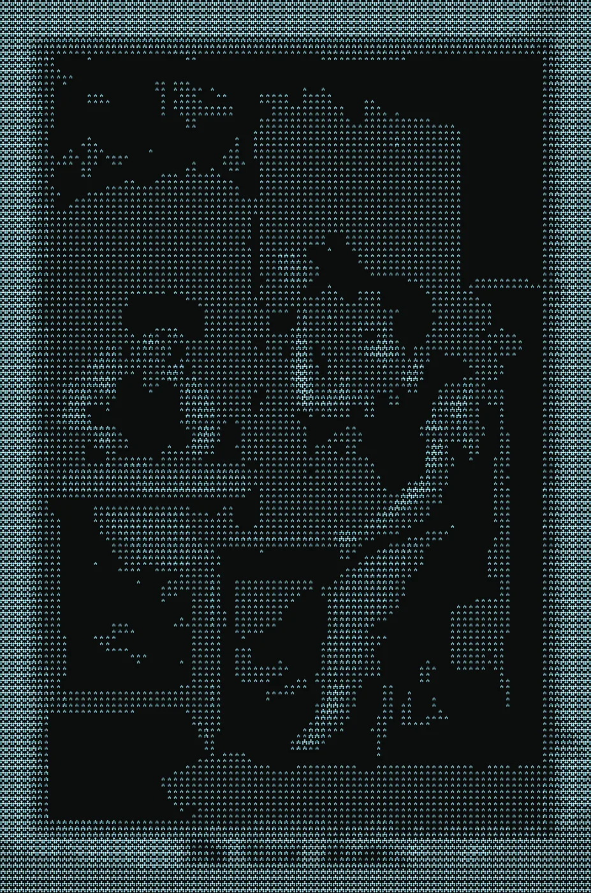
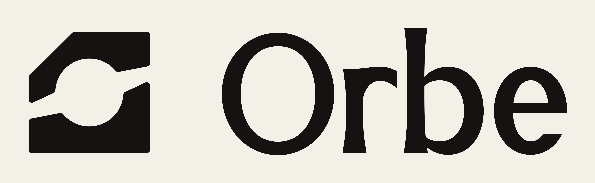
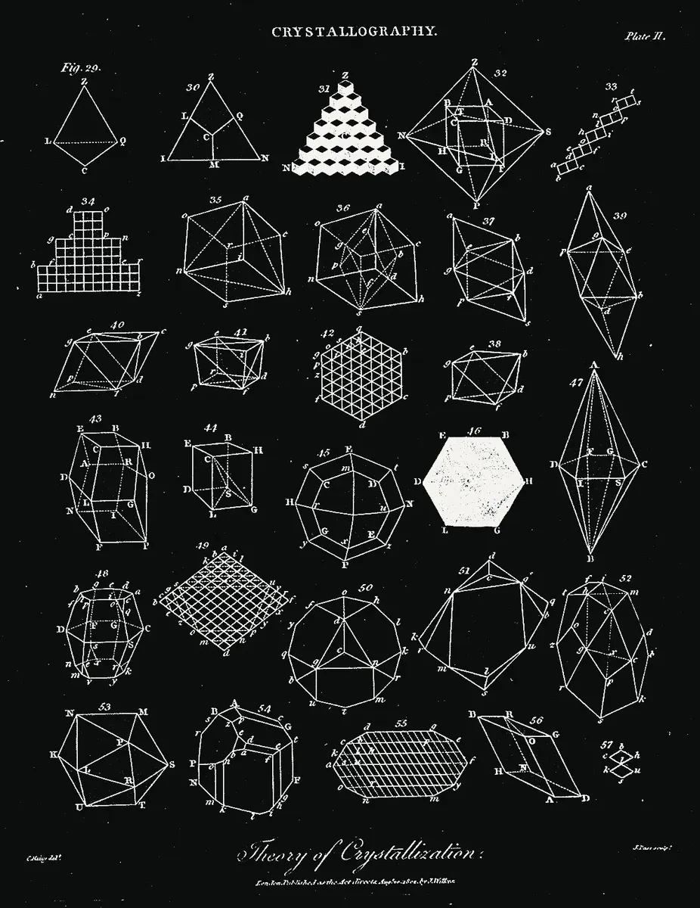

<title>Antimony, Two Routes</title>
<meta name="claude:viewport-fit-sides" content="cover">
<style>
/* Two routes on one sheet, each shown where people will actually meet it: the avatar in a list, the page header, the family with Orbe. */
@font-face { font-family: "Timeless Serif"; src: url(fonts/TimelessSerifVF.woff2) format("woff2"); font-weight: 200 700; font-display: swap; }
@font-face { font-family: "Timeless Sans"; src: url(fonts/timeless-sans-400.woff2) format("woff2"); font-weight: 400; font-display: swap; }
@font-face { font-family: "Timeless Sans"; src: url(fonts/timeless-sans-500.woff2) format("woff2"); font-weight: 500; font-display: swap; }
@font-face { font-family: "Commit Mono"; src: url(fonts/CommitMono-Latin-VF.woff2) format("woff2"); font-weight: 200 700; font-display: swap; }
:root { --ink: #0B0D0C; --paper: #F4F3EE; --cobalt: #2448FF; --sky: #94E6FF; --rule: rgba(11,13,12,.13); --dim: #5C6461; --card: #FFFFFF;
  --serif: "Timeless Serif", "Iowan Old Style", Georgia, serif; --sans: "Timeless Sans", "Helvetica Neue", Arial, sans-serif; --mono: "Commit Mono", ui-monospace, Menlo, monospace; color-scheme: light; }
* { box-sizing: border-box; margin: 0; }
html, body { background: var(--paper); color: var(--ink); }
body { font: 400 16px/1.55 var(--sans); -webkit-font-smoothing: antialiased; }
.band { padding-left: max(16px, env(safe-area-inset-left, 0px)); padding-right: max(16px, env(safe-area-inset-right, 0px)); padding-block: 64px; border-bottom: 1px solid var(--rule); }
.band.ink { background: var(--ink); color: var(--paper); --rule: rgba(244,243,238,.14); --dim: #8A9592; }
.in { max-width: 1120px; margin-inline: auto; display: grid; gap: 26px; }
.eyebrow { font: 500 11.5px/1 var(--mono); letter-spacing: .08em; text-transform: uppercase; color: var(--dim); }
h1 { font: 400 clamp(40px, 6vw, 76px)/1 var(--serif); letter-spacing: -.02em; text-wrap: balance; max-width: 14em; }
h2 { font: 400 clamp(28px, 3.6vw, 42px)/1.05 var(--serif); letter-spacing: -.012em; text-wrap: balance; max-width: 20em; }
h3 { font: 500 16px/1.3 var(--sans); }
p { max-width: 38em; } .dim { color: var(--dim); }
.lede { font: 400 clamp(18px, 2vw, 22px)/1.45 var(--serif); max-width: 34em; }
.lessons { display: grid; grid-template-columns: repeat(5, minmax(0, 1fr)); gap: 16px; counter-reset: l; }
.lessons div { border-top: 1px solid var(--rule); padding-top: 12px; display: grid; gap: 6px; font-size: 14.5px; }
.lessons b { font: 500 15px var(--sans); }
.two { display: grid; grid-template-columns: minmax(0, 1fr) minmax(0, 1fr); gap: 28px; align-items: start; }
.three { display: grid; grid-template-columns: repeat(3, minmax(0, 1fr)); gap: 16px; align-items: start; }
figure { display: grid; gap: 10px; min-width: 0; } figcaption { font-size: 14px; color: var(--dim); }
.tile { aspect-ratio: 1; max-width: 100%; display: grid; place-items: center; border: 1px solid var(--rule); }
.tile svg { width: 62%; height: auto; } .tile.ink { background: var(--ink); border-color: var(--ink); }
.av { width: 48px; height: 48px; display: grid; place-items: center; flex: none; overflow: hidden; border-radius: 4px; background: #D9DAD4; }
.av svg, .av img { width: 100%; height: 100%; display: block; }
.list { background: var(--card); border: 1px solid var(--rule); border-radius: 10px; padding: 6px 18px; display: grid; }
.row { display: flex; gap: 14px; align-items: center; padding: 14px 0; border-bottom: 1px solid rgba(11,13,12,.08); }
.row:last-child { border-bottom: 0; }
.row b { display: block; font: 500 16px/1.25 var(--sans); color: #191919; } .row span { font-size: 13.5px; color: #666; }
.row.ghost b { width: 140px; height: 12px; background: #E3E3DF; border-radius: 3px; margin-bottom: 8px; } .row.ghost span { display: block; width: 90px; height: 10px; background: #EDEDEA; border-radius: 3px; }
.page { background: var(--card); border: 1px solid var(--rule); border-radius: 10px; overflow: hidden; }
.page .ban { aspect-ratio: 1128 / 191; position: relative; overflow: hidden; background: var(--ink); }
.page .ban img { width: 100%; height: 100%; object-fit: cover; display: block; }
.page .body { padding: 0 20px 20px; position: relative; }
.page .big { width: 96px; height: 96px; margin-top: -48px; border: 4px solid var(--card); border-radius: 6px; display: block; }
.page .big .av { width: 100%; height: 100%; border-radius: 2px; }
.page b { display: block; font: 500 24px/1.2 var(--sans); color: #191919; margin-top: 10px; } .page span { color: #555; font-size: 15px; }
.fam { display: flex; gap: 26px; align-items: center; flex-wrap: wrap; }
.fam .m { width: 120px; } .fam .m svg, .fam .m img { width: 100%; height: auto; display: block; }
.stack { display: grid; gap: 6px; width: 120px; }
.endorse { display: flex; align-items: center; gap: 14px; }
.endorse img { height: 64px; width: auto; }
.endorse small { display: flex; align-items: center; gap: 6px; font: 400 13px var(--sans); color: var(--dim); border-left: 1px solid var(--rule); padding-left: 14px; }
.endorse small svg { width: 14px; height: 14px; }
.mosaic img, .plate img { width: 100%; height: auto; display: block; }
.risk { border-left: 2px solid var(--ink); padding-left: 14px; display: grid; gap: 6px; max-width: 40em; }
.bloom { position: relative; aspect-ratio: 4 / 3; max-width: 100%; background: var(--ink); cursor: crosshair; border-radius: 4px; overflow: hidden; }
.bloom canvas { position: absolute; inset: 0; width: 100%; height: 100%; display: block; }
.bloom .hint { position: absolute; left: 14px; bottom: 12px; font: 500 11px var(--mono); letter-spacing: .06em; text-transform: uppercase; color: var(--paper); background: rgba(11,13,12,.66); padding: 6px 9px; border-radius: 3px; pointer-events: none; }
.verdict { display: grid; grid-template-columns: minmax(0, 1fr) minmax(0, 1fr); gap: 0; border: 1px solid var(--rule); }
.verdict div { padding: 18px; display: grid; gap: 8px; align-content: start; } .verdict div + div { border-left: 1px solid var(--rule); }
.verdict ul { padding-left: 1.1em; display: grid; gap: 6px; }
@media (max-width: 860px) { .two, .three, .verdict { grid-template-columns: 1fr; } .lessons { grid-template-columns: 1fr 1fr; } .verdict div + div { border-left: 0; border-top: 1px solid var(--rule); } .band { padding-block: 48px; } }
</style>

<section class="band"><div class="in">
  <span class="eyebrow">Antimony, the mark</span>
  <h1>Two routes, shown where people will meet them.</h1>
  <p class="lede">Marks like Fathom's, Fyxer's and fal's work for five plain reasons. Both routes below are held to the same five.</p>
  <div class="lessons">
    <div><b>One shape</b>You could draw it from memory after one look, and it survives 48 pixels in a list.</div>
    <div><b>One pairing</b>A colour pair nobody near you owns. In a feed, colour is recognised before shape.</div>
    <div><b>It fills the square</b>Avatars are tiny. The best marks fill them edge to edge.</div>
    <div><b>It is a seed</b>The mark is the smallest piece of a language: banners, posts and films are made of it.</div>
    <div><b>Repetition</b>The same pair and the same grammar, every single time, for years.</div>
  </div>
</div></section>

<section class="band"><div class="in">
  <span class="eyebrow">Route one</span>
  <h2>The Bond, fixed: sky on ink, filling its square, and the seed of everything.</h2>
  <p class="dim">Three changes from last time. The thumbnail pairing is now sky on ink, which nobody near us owns and which stands apart from LinkedIn's own blue buttons. The Bond fills the avatar. And the archive plates are drawn out of Bonds, the way First of Kind draws portraits out of words.</p>
  <div class="three">
    <figure><div class="tile ink"><svg class="" viewBox="0 0 100 100" aria-hidden="true"><g><path d="M45 16.5H55V47.5H45ZM19 42.5H50V52.5H19ZM50 42.5H81V52.5H50ZM14 47.5H24V78.5H14ZM76 47.5H86V78.5H76ZM50 1L65.5 16.5L50 32L34.5 16.5ZM19 32L34.5 47.5L19 63L3.5 47.5ZM81 32L96.5 47.5L81 63L65.5 47.5ZM19 63L34.5 78.5L19 94L3.5 78.5ZM81 63L96.5 78.5L81 94L65.5 78.5Z" fill="#94E6FF"/><path d="M50 32L65.5 47.5L50 63L34.5 47.5Z" fill="#F4F3EE"/></g></svg></div><figcaption>The avatar pairing: sky atoms, a paper nucleus, on ink.</figcaption></figure>
    <figure><div class="tile"><svg class="" viewBox="0 0 100 100" aria-hidden="true"><g><path d="M45 16.5H55V47.5H45ZM19 42.5H50V52.5H19ZM50 42.5H81V52.5H50ZM14 47.5H24V78.5H14ZM76 47.5H86V78.5H76ZM50 1L65.5 16.5L50 32L34.5 16.5ZM19 32L34.5 47.5L19 63L3.5 47.5ZM81 32L96.5 47.5L81 63L65.5 47.5ZM19 63L34.5 78.5L19 94L3.5 78.5ZM81 63L96.5 78.5L81 94L65.5 78.5Z" fill="#0B0D0C"/><path d="M50 32L65.5 47.5L50 63L34.5 47.5Z" fill="#2448FF"/></g></svg></div><figcaption>On paper it stays ink with a cobalt nucleus.</figcaption></figure>
    <figure><div class="list"><div class="row"><span class="av" style="background:#0B0D0C"><svg class="" viewBox="0 0 100 100" aria-hidden="true"><g transform="translate(21.000000000000004 21.000000000000004) scale(0.58)"><path d="M45 16.5H55V47.5H45ZM19 42.5H50V52.5H19ZM50 42.5H81V52.5H50ZM14 47.5H24V78.5H14ZM76 47.5H86V78.5H76ZM50 1L65.5 16.5L50 32L34.5 16.5ZM19 32L34.5 47.5L19 63L3.5 47.5ZM81 32L96.5 47.5L81 63L65.5 47.5ZM19 63L34.5 78.5L19 94L3.5 78.5ZM81 63L96.5 78.5L81 94L65.5 78.5Z" fill="#F4F3EE"/><path d="M50 32L65.5 47.5L50 63L34.5 47.5Z" fill="#94E6FF"/></g></svg></span><div><b>Antimony (before)</b><span>Software Development</span></div></div><div class="row"><span class="av" style="background:#0B0D0C"><svg class="" viewBox="0 0 100 100" aria-hidden="true"><g transform="translate(7.0 7.0) scale(0.86)"><path d="M45 16.5H55V47.5H45ZM19 42.5H50V52.5H19ZM50 42.5H81V52.5H50ZM14 47.5H24V78.5H14ZM76 47.5H86V78.5H76ZM50 1L65.5 16.5L50 32L34.5 16.5ZM19 32L34.5 47.5L19 63L3.5 47.5ZM81 32L96.5 47.5L81 63L65.5 47.5ZM19 63L34.5 78.5L19 94L3.5 78.5ZM81 63L96.5 78.5L81 94L65.5 78.5Z" fill="#94E6FF"/><path d="M50 32L65.5 47.5L50 63L34.5 47.5Z" fill="#F4F3EE"/></g></svg></span><div><b>Antimony</b><span>Software Development</span></div></div><div class="row ghost"><span class="av"></span><div><b></b><span></span></div></div><div class="row ghost"><span class="av"></span><div><b></b><span></span></div></div></div><figcaption>In a list at real size: before and after filling the square.</figcaption></figure>
  </div>
  <div class="two">
    <figure class="mosaic"><figcaption>The seed: an 18th century gold beater, redrawn out of 5,000 Bonds in six sizes. The same generator turns any plate in the archive, or any photograph, into our language.</figcaption></figure>
    <div style="display:grid;gap:22px">
      <figure><div class="page"><div class="ban"></div><div class="body"><span class="big"><span class="av" style="background:#0B0D0C"><svg class="" viewBox="0 0 100 100" aria-hidden="true"><g transform="translate(7.0 7.0) scale(0.86)"><path d="M45 16.5H55V47.5H45ZM19 42.5H50V52.5H19ZM50 42.5H81V52.5H50ZM14 47.5H24V78.5H14ZM76 47.5H86V78.5H76ZM50 1L65.5 16.5L50 32L34.5 16.5ZM19 32L34.5 47.5L19 63L3.5 47.5ZM81 32L96.5 47.5L81 63L65.5 47.5ZM19 63L34.5 78.5L19 94L3.5 78.5ZM81 63L96.5 78.5L81 94L65.5 78.5Z" fill="#94E6FF"/><path d="M50 32L65.5 47.5L50 63L34.5 47.5Z" fill="#F4F3EE"/></g></svg></span></span><b>Antimony</b><span>Software for the people who make the work.</span></div></div><figcaption>A company page: the gold beater, drawn in Bonds, as the cover.</figcaption></figure>
      <figure><div class="endorse"><small><svg class="" viewBox="0 0 100 100" aria-hidden="true"><g><path d="M45 16.5H55V47.5H45ZM19 42.5H50V52.5H19ZM50 42.5H81V52.5H50ZM14 47.5H24V78.5H14ZM76 47.5H86V78.5H76ZM50 1L65.5 16.5L50 32L34.5 16.5ZM19 32L34.5 47.5L19 63L3.5 47.5ZM81 32L96.5 47.5L81 63L65.5 47.5ZM19 63L34.5 78.5L19 94L3.5 78.5ZM81 63L96.5 78.5L81 94L65.5 78.5Z" fill="#0B0D0C"/><path d="M50 32L65.5 47.5L50 63L34.5 47.5Z" fill="#2448FF"/></g></svg>by Antimony</small></div><figcaption>The family: Orbe keeps its own mark; Antimony stands beside it as the maker.</figcaption></figure>
    </div>
  </div>
</div></section>

<section class="band"><div class="in">
  <span class="eyebrow">Route two</span>
  <h2>The Sign: antimony's alchemical sign, shared between parent and product.</h2>
  <p class="dim">The old sign for antimony is a star and a cross above an orb split in two. Orbe's mark is already that orb: a block with a circle cut out and split by a channel. Here Antimony takes the upper half: the same block and the same 45 degree corner as Orbe, with a star rising on a stem. Side by side they are two halves of one sign.</p>
  <div class="three">
    <figure><div class="tile"><svg class="" viewBox="0 0 100 100" aria-hidden="true"><mask id="s2" maskUnits="userSpaceOnUse" x="-5" y="-5" width="110" height="110"><rect x="-5" y="-5" width="110" height="110" fill="#fff"/><path d="M63 37.25L80 37.25L80 30.75L63 30.75ZM59.24 39.83L71.26 51.85L75.85 47.26L63.83 35.24ZM54.75 39L54.75 56L61.25 56L61.25 39ZM52.17 35.24L40.15 47.26L44.74 51.85L56.76 39.83ZM53 30.75L36 30.75L36 37.25L53 37.25ZM56.76 28.17L44.74 16.15L40.15 20.74L52.17 32.76ZM61.25 29L61.25 12L54.75 12L54.75 29ZM63.83 32.76L75.85 20.74L71.26 16.15L59.24 28.17ZM54.75 56L54.75 100L61.25 100L61.25 56Z" fill="#000"/></mask><path d="M38 0H98.6Q100 0 100 1.4V98.6Q100 100 98.6 100H1.4Q0 100 0 98.6V38Z" fill="#0B0D0C" mask="url(#s2)"/></svg></div><figcaption>Antimony: the star, cut from Orbe's block.</figcaption></figure>
    <figure><div class="tile"></div><figcaption>Orbe: the orb, as it stands today.</figcaption></figure>
    <figure><div class="tile"><div class="stack"><svg class="" viewBox="0 0 100 100" aria-hidden="true"><mask id="s3" maskUnits="userSpaceOnUse" x="-5" y="-5" width="110" height="110"><rect x="-5" y="-5" width="110" height="110" fill="#fff"/><path d="M63 37.25L80 37.25L80 30.75L63 30.75ZM59.24 39.83L71.26 51.85L75.85 47.26L63.83 35.24ZM54.75 39L54.75 56L61.25 56L61.25 39ZM52.17 35.24L40.15 47.26L44.74 51.85L56.76 39.83ZM53 30.75L36 30.75L36 37.25L53 37.25ZM56.76 28.17L44.74 16.15L40.15 20.74L52.17 32.76ZM61.25 29L61.25 12L54.75 12L54.75 29ZM63.83 32.76L75.85 20.74L71.26 16.15L59.24 28.17ZM54.75 56L54.75 100L61.25 100L61.25 56Z" fill="#000"/></mask><path d="M38 0H98.6Q100 0 100 1.4V98.6Q100 100 98.6 100H1.4Q0 100 0 98.6V38Z" fill="#0B0D0C" mask="url(#s3)"/></svg></div></div><figcaption>Stacked, they make the sign: star above, orb below.</figcaption></figure>
  </div>
  <div class="two">
    <figure><div class="list"><div class="row"><span class="av" style="background:#0B0D0C"><svg class="" viewBox="0 0 100 100" aria-hidden="true"><mask id="s1" maskUnits="userSpaceOnUse" x="-5" y="-5" width="110" height="110"><rect x="-5" y="-5" width="110" height="110" fill="#fff"/><path d="M63 37.25L80 37.25L80 30.75L63 30.75ZM59.24 39.83L71.26 51.85L75.85 47.26L63.83 35.24ZM54.75 39L54.75 56L61.25 56L61.25 39ZM52.17 35.24L40.15 47.26L44.74 51.85L56.76 39.83ZM53 30.75L36 30.75L36 37.25L53 37.25ZM56.76 28.17L44.74 16.15L40.15 20.74L52.17 32.76ZM61.25 29L61.25 12L54.75 12L54.75 29ZM63.83 32.76L75.85 20.74L71.26 16.15L59.24 28.17ZM54.75 56L54.75 100L61.25 100L61.25 56Z" fill="#000"/></mask><path d="M38 0H98.6Q100 0 100 1.4V98.6Q100 100 98.6 100H1.4Q0 100 0 98.6V38Z" fill="#94E6FF" mask="url(#s1)"/></svg></span><div><b>Antimony</b><span>Software Development</span></div></div><div class="row"><span class="av" style="background:#F2F0E8"></span><div><b>Orbe</b><span>Software Development</span></div></div><div class="row ghost"><span class="av"></span><div><b></b><span></span></div></div><div class="row ghost"><span class="av"></span><div><b></b><span></span></div></div></div><figcaption>In a list at real size, next to Orbe.</figcaption></figure>
    <figure><div class="page"><div class="ban"></div><div class="body"><span class="big"><span class="av" style="background:#0B0D0C"><svg class="" viewBox="0 0 100 100" aria-hidden="true"><mask id="s1" maskUnits="userSpaceOnUse" x="-5" y="-5" width="110" height="110"><rect x="-5" y="-5" width="110" height="110" fill="#fff"/><path d="M63 37.25L80 37.25L80 30.75L63 30.75ZM59.24 39.83L71.26 51.85L75.85 47.26L63.83 35.24ZM54.75 39L54.75 56L61.25 56L61.25 39ZM52.17 35.24L40.15 47.26L44.74 51.85L56.76 39.83ZM53 30.75L36 30.75L36 37.25L53 37.25ZM56.76 28.17L44.74 16.15L40.15 20.74L52.17 32.76ZM61.25 29L61.25 12L54.75 12L54.75 29ZM63.83 32.76L75.85 20.74L71.26 16.15L59.24 28.17ZM54.75 56L54.75 100L61.25 100L61.25 56Z" fill="#000"/></mask><path d="M38 0H98.6Q100 0 100 1.4V98.6Q100 100 98.6 100H1.4Q0 100 0 98.6V38Z" fill="#94E6FF" mask="url(#s1)"/></svg></span></span><b>Antimony</b><span>Software for the people who make the work.</span></div></div><figcaption>A company page with an archive plate, printed night side.</figcaption></figure>
  </div>
  <div class="risk"><h3>The risks, plainly</h3><p class="dim">A star on a stem sits close to the sparkle that every AI product now uses, and close to Perplexity's asterisk. Keeping the cross from the original sign makes it read as a church or a royal orb, so I have left the cross out. And this route only works if Orbe's mark stays as it is: the two are now bound together.</p></div>
</div></section>

<section class="band ink"><div class="in">
  <span class="eyebrow">The ink bloom</span>
  <h2>Two still pictures and a shader. Tap anywhere.</h2>
  <div class="two">
    <div class="bloom" id="bloom"><canvas id="bc" aria-label="Archive plates, changing with an ink bloom"></canvas><span class="hint">Tap to bloom</span></div>
    <div style="display:grid;gap:14px;align-content:start">
      <p>It is not a video. The browser holds two still plates and, every frame, decides for each pixel which one to show: inside a circle growing from where you tapped, the new plate; outside, the old one. Noise pushes the edge about so it spreads like ink into paper.</p>
      <p class="dim">Ours adds one thing Bencho's does not: a thin ink line left at the edge as it spreads, the way a drop of ink leaves a darker rim on paper. Left alone, it blooms from the centre, the Bond's nucleus, every few seconds.</p>
    </div>
  </div>
</div></section>

<section class="band"><div class="in">
  <span class="eyebrow">My read</span>
  <h2>Both pass the five. The Bond is the stronger seed; the Sign is the stronger story.</h2>
  <div class="verdict">
    <div><h3>The Bond</h3><ul><li>Ours alone: no other mark looks like it.</li><li>A true seed: plates, banners and films are made of it.</li><li>Leaves Orbe free to change.</li><li>Its story (five electrons, a promise kept) has to be told.</li></ul></div>
    <div><h3>The Sign</h3><ul><li>A true story you can see: the parent and the product are two halves of antimony's own sign.</li><li>Sits close to the AI sparkle and to Perplexity.</li><li>Binds Orbe's mark for good.</li><li>A weaker seed: stars tile, but as texture rather than a language.</li></ul></div>
  </div>
  <p>I would build the standards on the Bond, and tell the alchemical sign as part of its story in the Art direction chapter, where it can live without binding the marks.</p>
</div></section>

<script>
(() => {
  "use strict";
  const box = document.getElementById("bloom"), c = document.getElementById("bc"), gl = c.getContext("webgl", { antialias: false, premultipliedAlpha: false });
  if (!gl) return;
  const SRC = ["img/lab.webp", "img/printers.webp", "img/crystal.webp", "img/beater.webp"];
  const vs = `attribute vec2 p; varying vec2 uv; void main() { uv = vec2(p.x * .5 + .5, .5 - p.y * .5); gl_Position = vec4(p, 0., 1.); }`;
  const fs = `precision highp float; varying vec2 uv;
  uniform sampler2D A, B; uniform float t, seed; uniform vec2 o, asp, ca, cb;
  float h(vec2 p) { return fract(sin(dot(p, vec2(127.1, 311.7))) * 43758.5453); }
  float n(vec2 p) { vec2 i = floor(p), f = fract(p); f = f * f * (3. - 2. * f);
    return mix(mix(h(i), h(i + vec2(1, 0)), f.x), mix(h(i + vec2(0, 1)), h(i + vec2(1, 1)), f.x), f.y); }
  float fbm(vec2 p) { float v = 0., a = .5; for (int i = 0; i < 5; i++) { v += a * n(p); p = p * 2.07 + 3.1; a *= .5; } return v; }
  vec2 fit(vec2 u, vec2 c) { return (u - .5) * c + .5; }
  void main() {
    vec2 d = (uv - o) * asp; float r = length(d);
    float grow = t * 1.12;
    // the edge: a circle pushed about by broad noise, feathered by fine noise, as ink runs along the paper's grain
    float e = r + (fbm(uv * 3.5 + seed) - .5) * .42 * (.25 + t) + (fbm(uv * 22. + seed * 1.7) - .5) * .045;
    float m = 1. - smoothstep(grow - .005, grow + .005, e);
    float rim = exp(-pow((e - grow) / .007, 2.)) * (1. - smoothstep(.8, 1., t)) * step(.001, t);
    vec2 push = normalize(d + 1e-5) / asp * rim * .006;
    vec3 a = texture2D(A, fit(uv - push, ca)).rgb, b = texture2D(B, fit(uv + push, cb)).rgb;
    vec3 col = mix(a, b, m);
    col = mix(col, vec3(.043, .051, .047), rim * .9);       // the ink line left at the edge
    gl_FragColor = vec4(col, 1.);
  }`;
  const sh = (type, src) => { const s = gl.createShader(type); gl.shaderSource(s, src); gl.compileShader(s); if (!gl.getShaderParameter(s, gl.COMPILE_STATUS)) throw gl.getShaderInfoLog(s); return s; };
  const pr = gl.createProgram(); gl.attachShader(pr, sh(gl.VERTEX_SHADER, vs)); gl.attachShader(pr, sh(gl.FRAGMENT_SHADER, fs)); gl.linkProgram(pr); gl.useProgram(pr);
  const buf = gl.createBuffer(); gl.bindBuffer(gl.ARRAY_BUFFER, buf); gl.bufferData(gl.ARRAY_BUFFER, new Float32Array([-1, -1, 1, -1, -1, 1, 1, 1]), gl.STATIC_DRAW);
  const loc = gl.getAttribLocation(pr, "p"); gl.enableVertexAttribArray(loc); gl.vertexAttribPointer(loc, 2, gl.FLOAT, false, 0, 0);
  const U = n => gl.getUniformLocation(pr, n);
  const tex = [], asp = [];
  const still = matchMedia("(prefers-reduced-motion: reduce)").matches;
  let cur = 0, next = 1, t = 0, start = 0, busy = false, origin = [.5, .5], seed = 0, ready = 0;
  function load(i) { return new Promise(res => { const im = new Image(); im.onload = () => {
    const tx = gl.createTexture(); gl.bindTexture(gl.TEXTURE_2D, tx);
    gl.texImage2D(gl.TEXTURE_2D, 0, gl.RGB, gl.RGB, gl.UNSIGNED_BYTE, im);
    gl.texParameteri(gl.TEXTURE_2D, gl.TEXTURE_MIN_FILTER, gl.LINEAR); gl.texParameteri(gl.TEXTURE_2D, gl.TEXTURE_MAG_FILTER, gl.LINEAR);
    gl.texParameteri(gl.TEXTURE_2D, gl.TEXTURE_WRAP_S, gl.CLAMP_TO_EDGE); gl.texParameteri(gl.TEXTURE_2D, gl.TEXTURE_WRAP_T, gl.CLAMP_TO_EDGE);
    tex[i] = tx; asp[i] = im.width / im.height; res(); }; im.src = SRC[i]; }); }
  const cover = (ia) => { const ca = c.width / c.height; return ia > ca ? [ca / ia, 1] : [1, ia / ca]; };
  function size() { const r = box.getBoundingClientRect(), d = Math.min(2, devicePixelRatio || 1); c.width = r.width * d; c.height = r.height * d; gl.viewport(0, 0, c.width, c.height); }
  function draw() {
    gl.activeTexture(gl.TEXTURE0); gl.bindTexture(gl.TEXTURE_2D, tex[cur]); gl.uniform1i(U("A"), 0);
    gl.activeTexture(gl.TEXTURE1); gl.bindTexture(gl.TEXTURE_2D, tex[next]); gl.uniform1i(U("B"), 1);
    gl.uniform1f(U("t"), t); gl.uniform1f(U("seed"), seed); gl.uniform2f(U("o"), origin[0], origin[1]);
    gl.uniform2f(U("asp"), 1, c.height / c.width);       // distances in units of the canvas width
    gl.uniform2fv(U("ca"), cover(asp[cur])); gl.uniform2fv(U("cb"), cover(asp[next]));
    gl.drawArrays(gl.TRIANGLE_STRIP, 0, 4);
  }
  function bloom(x, y) {
    if (busy || ready < SRC.length) return; busy = true; origin = [x, y]; seed = Math.random() * 40; start = performance.now();
    const dur = still ? 1 : 2600;
    (function step(now) { const k = Math.min(1, (now - start) / dur); t = 1 - Math.pow(1 - k, 1.7); draw();
      if (k < 1) requestAnimationFrame(step); else { cur = next; next = (next + 1) % SRC.length; t = 0; draw(); busy = false; } })(start);
  }
  box.addEventListener("pointerdown", e => { const r = box.getBoundingClientRect(); bloom((e.clientX - r.left) / r.width, (e.clientY - r.top) / r.height); clearInterval(auto); auto = setInterval(tick, 5200); });
  window.__bloomAt = (tt, x, y) => { t = tt; origin = [x, y]; draw(); };   // for checking frames
  const tick = () => bloom(.5, .5); let auto = setInterval(tick, 5200);
  new ResizeObserver(() => { size(); if (ready === SRC.length) draw(); }).observe(box);
  Promise.all(SRC.map((_, i) => load(i))).then(() => { ready = SRC.length; size(); draw(); });
})();
</script>
